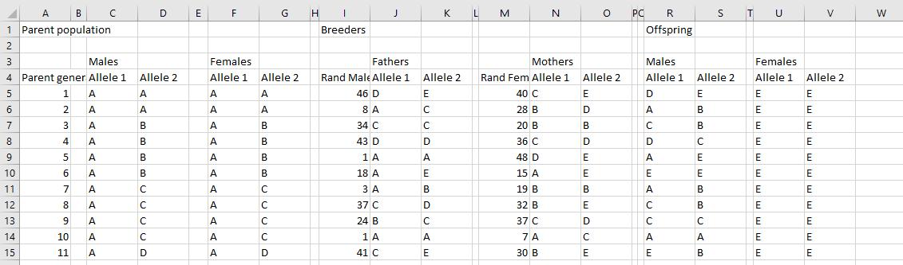
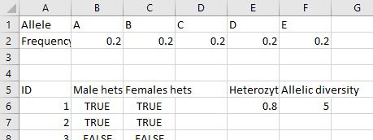
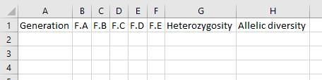
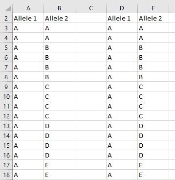
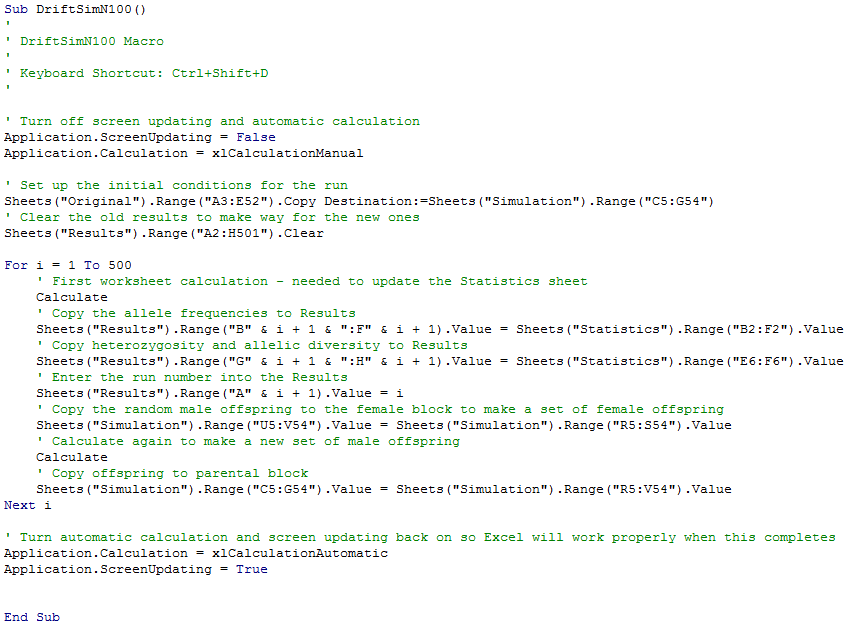

Genetic drift simulation
For the final three weeks of class, you will build a simulation model of genetic drift. Genetic drift is interesting because of its applications to evolutionary biology, plant and animal breeding, biotechnology, and biological conservation. We will focus on the conservation applications in this case, and as such we will focus on how genetic drift affects allelic diversity (which is important for a species' ability to adapt to its environment) and heterozygosity (which is important for avoiding genetic diseases, and for an individual's ability to fight off a diversity of infectious diseases).
The simulation should be done by the end of the final day of class, on Dec 5th. We ill break the work down into four stages:
-
Initial setup of the spreadsheets, and simulation of a single run of 500 generations. This is your goal for today.
-
Modification to run the simulation 100 times, collect data from each. This is the goal for next week.
-
Increase population size
-
Add immigration. These last two are easy, and can be done on the last day of class.
There will be a written report for the model, which will take the place of your final exam. Instructions for the write-up are on the CC site, and the write-up will be due by 11:55 pm on the day our final exam is scheduled, Weds 12/13.
Stage 1: Setting up the simulation model
To start our genetic drift model, we first need to set up our initial population. The model will be general, and is not meant to model a particular species. However, we have some choices to make about how to construct the simulation that need to be guided by biological characteristics. So, in a general sense, the "species" we are simulating will have the following properties:
-
Diploid (meaning there are two alleles per gene, one inherited from the mother and one from the father)
-
Sexually reproducing
-
Random mating
The model will be individual-based, meaning that we will represent each individual in the population in our model, rather than setting a gene frequency at the population level that changes at random. Random changes in gene frequency (i.e. genetic drift) will emerge from the process of random mating between individuals, in which some individuals produce no offspring and others produce several offspring due to random chance events. Although we don't need to specify a particular species that our model represents, this type of random mating is easiest to imagine from "broadcast spawners", like many attached marine invertebrates. Species such as anemones are not capable of moving around to find a mate, and they instead release their gametes into the water column, where fertilization occurs. There is little opportunity with a system such as this for individuals to select mates, and random mixing of alleles is the most likely outcome.
To keep the simulation relatively simple, we will only concern ourselves with a single gene with 5 different alleles. Any individual can only have two of these alleles, one of which was inherited from its mother, one from its father, but in the population as a whole there are 5 alleles present; we will label them A, B, C, D, and E.
The first thing we need to do is to establish our initial populations of individuals. We will know only two things about each individual: sex and genotype.
Step 1. Set up the basic layout for the initial parent population.
We need to set up the genotypes for the parent population, which will dictate the starting allele frequencies for the population's gene pool. These are the "initial conditions".
1. Open Excel to a blank spreadsheet. In cell A1 write "Parent population".
2. In cell A4 of the first worksheet (Sheet1) write "ID", and in cell A5 through A54 enter sequential numbers from 1 to 50 (you can use the "fill series" trick, or enter numbers 1 and 2, then extend them with the fill handle).
3. In cell C3 write "Males", and in cell C4 write "Allele 1". In cell D4 write "Allele 2".
4. In cell F3 write "Females", and in cell F4 write "Allele 1". In cell G4 write "Allele 2".
5. Double-click on the "Sheet1" tab and rename the sheet "Simulation".
6. Save the spreadsheet as a macro-enabled spreadsheet called "drift_simulation_n100" - use "File" → "Save as", and then make sure you select "Excel Macro-Enabled Workbook" from the "Save as type:" drop-down menu.
If you don't save
as a macro-enabled worksheet your macro won't be saved...don't let
this happen to you!
Step 2. Initial conditions: establish the genotypes of the first 100 individuals in the population
We will begin this population with 5 alleles (A, B, C, D, and E), each at the same frequency of 0.2, which means that each of the five will represent 20% of the total alleles in the population.
We can translate gene frequencies into genotype frequencies using the Hardy-Weinberg formula. Hardy-Weinberg translates allele frequencies into genotype frequencies by assuming that alleles combine at random, in proportion to their frequencies in the population. We can see how it works using a version of a Punnett square, with each parental allele in a row and column label, which then combine to form genotypes of offspring:
| A (0.2) |
B (0.2) |
C (0.2) |
D (0.2) |
E (0.2) |
|
|---|---|---|---|---|---|
| A (0.2) | AA (0.22) |
AB (0.2)(0.2) |
AC (0.2)(0.2) |
AC (0.2)(0.2) |
AE (0.2)(0.2) |
| B (0.2) | AB (0.2)(0.2) |
BB (0.22) |
BC (0.2)(0.2) |
BD (0.2)(0.2) |
BE (0.2)(0.2) |
| C (0.2) | AC (0.2)(0.2) |
BC (0.2)(0.2) |
CC (0.22) |
CD (0.2)(0.2) |
CE (0.2)(0.2) |
| D (0.2) | AD (0.2)(0.2) |
BD (0.2)(0.2) |
CD (0.2)(0.2) |
DD (0.22) |
DE (0.2)(0.2) |
| E (0.2) | AE (0.2)(0.2) |
BE (0.2)(0.2) |
CE (0.2)(0.2) |
DE (0.2)(0.2) |
EE (0.22) |
Homozygotes are produced when the same allele is contributed by each parent, which means that if the frequency of the allele is p, then a particular homozygous genotype should be produced at a frequency of p x p, or p2. Since all of the alleles have a frequency of 0.2, this means homozygotes occur at a frequency of 0.04. When two different alleles meet, you multiply their frequencies - if the frequency of the first is p and the frequency of the second is q, then the frequency of the heterozygote would be pq. If you look at the table, though, each heterozygote occurs twice in the table, so this pq combination has to be multiplied by 2 to get the heterozygote frequency - thus, the heterozygotes will all have frequencies of 2pq, or 0.08.
|
With that as background, the genotypes we will use for the
initial population is given in the table to the left; each
homozygote should be at a frequency of 0.22 = 0.04, and
each heterozygote should be at a frequency of 2 (0.2)(0.2) = 0.08.
We will be using 50 males and 50 females to begin, so there will
50 (0.04) = 2 males with each homozygous genotype, and 50 (0.08) =
4 males with each heterozygous genotype. The same will be true for
females. |
We can use this table to guide our setup of the genotypes of the initial 50 males and 50 females. We'll start with the males.
1. We will start with Allele 1.
As you can see from the table, if you sum up the number of males with genotypes starting with an A, there are 18 of them. So, enter an A for the first 18 Male Allele 1's (in column C, from C5 to C22, which are for labels 1 through 18).
There are 14 males with a B as Allele 1, so make the next 14 Male Allele 1's B.
Continue with 10 C's, 6 D's, and 2 E's.
2. Set up Allele 2's. Now, use the "Number of Males" for each genotype to assign Allele 2. The first two males should be AA, so enter A's for Allele 2 for the first two males. The next 4 should be AB, so enter B for Allele 2 for the next four males. Continue this process through the rest of the table.
3. Copy the genotypes for the Males to the Females. We will start the males and females at the same frequencies, so once you have the males done you can just select cells C5 through D54, and paste them to F5 through G54. You now have a population with five alleles at equal frequencies, with exactly equilibrium numbers of homozygotes and heterozygotes.
4. Create a new sheet after Sheet 3 (click on the "Insert Worksheet" button (a plus inside a circle) after Sheet 3). Double-click the tab at the bottom that says Sheet4 and re-name it "Original". Copy the male and female allele frequencies from the "Simulation" tab (c3:g54, including the labels), and paste them in the "Original" tab, in cells a1:e52. We will use these to easily return to initial conditions later.
5. Save your work. I'll remind you to do this at the end of each major step, but saving is a Good Thing, particularly after you have made a change and are sure it's right.
Step 3. Measure the genetic composition of the population
The next thing we want to do is to measure relevant characteristics of the gene pool from the population as the simulation progresses. There are several different things we could measure, but the primary issues we would be interested in from a conservation perspective are changes in allele frequencies and changes in heterozygosity. If single alleles go to "fixation" that means it has reached a frequency of 1, and is the only allele left in the population. This is the end result of genetic drift, given enough time, and we are interested in how long it takes to reach fixation, if it occurs. If a single allele goes to fixation, all the others have gone to a frequency of 0 and are lost from the population. The allelic diversity is at its minimum point when this happens.
1. Switch to Sheet 2. Double-click on the "Sheet 2" tab, and rename the sheet "Statistics". We will use this sheet to gather information from the simulation each generation.
2. Calculate gene frequencies. In cell A1 type "Allele", and in cell A2 type "Frequency". Enter A, B, C, D, and E in the columns to the right of "Allele".
Now, in cell B2, count up the number of alleles that are each letter for the male and female data in cells C5:G54 in the Simulation sheet, and divide by the total number of alleles (which is 200, since we have 100 individuals with 2 alleles each). You can do the counting with a"countif()" function - countif() will count up all the cells that meet a "logical test" that you specify. So, for example, to count up how many "A" alleles are in the population you would enter the formula:
=countif(Simulation!$C$5:$G$54, Statistics!B1)/200
You'll see that the sheet name has to be included in the cell references because we're referring to cells in two different sheets. This makes the cell references a little harder to read, but splitting the simulation from the statistics will make the model results easier to see. If you enter the cell references by switching to the sheet and selecting the cells with the mouse then the sheet name will be entered automatically. If you are writing the references by hand, you'll need to add the sheet name and exclamation point yourself. A reference without a sheet name is assumed to refer to the same sheet that the function is in.
Copy and paste this cell to C2 through F2 to get frequencies for alleles B through E.
Frequencies are proportions of a total - to check if you've done this correctly, each frequency should be 0.2, and across all five they sum to 1. As the simulation runs, the frequencies will change but will always sum to 1.
3. Calculate the frequency of heterozygotes and in the population. We only need to measure the frequency of heterozygotes from our data, because the frequency of homozygotes will by just be 1-(frequency of heterozygotes). To calculate this, we first need to establish if each individual is heterozygous.
In the Statistics sheet, label A5 "ID", and enter numbers 1 through 50 below.
Label cell B5 "Male heterozygous", and cell C5 "Female heterozygous".
In cell B6 use the formula"=Simulation!C5<>Simulation!D5" to assess whether male 1 is heterozygous (the "<>" symbol means "not equal", so if the alleles are different you will get a "TRUE" for this formula).
In cell C6 enter the formula to check if female 1 is heterozygous - make sure you're pointing at the right cells!
Now, copy B6:C6 and paste them to the rest of the rows.
Finally, in cell E5 type "Frequency of heterozygotes". In cell E6 count the TRUE's in B6:C55 using a countif(), and divide this by the number of individuals (100, not the number of alleles - individuals are either homozygous or heterozygous). To begin, there are 80% heterozygotes, so this should be 0.8.
4. Count the number of alleles present in the population (allelic diversity). This one's easy - we just need to count up the number of "Frequencies" numbers that are not equal to 0 in the "Statistics" sheet. Label F5 "Allelic diversity", and in F6 use a countif() to count how many rows in B2:F2 of the Statistics sheet are greater than 0 (you'll need to put the ">0" criteria in quotes as the second argument).
5. Save your work.
Step 4. Set up the results worksheet.
Now that we have frequencies of all the alleles, heterozygosity, and allelic diversity calculated for this generation, we need to set up a place to record all of this information with each generation.
1. Switch to Sheet 3, and double-click on the tab so you can re-name it to "Results".
2. Label A1 "Generation". Label the next five columns "F.A", "F.B", "F.C", "F.D", "F.E" to represent the frequencies for each allele.
3. Label G1 "Heterozygosity", and H1 "Allelic diversity".
4. Save your work.
Simulate reproduction
You're now ready to simulate production of the next generation. The way you will do that is to:
-
Start with male offspring
-
Randomly select which males and which females will reproduce
-
Randomly select which of the two alleles each individual carries will be passed on to the offspring
-
Repeat for female offspring
1. Switch to the Simulation sheet.
-
Label I1 "Breeders".
-
Label J3 "Fathers" and N3 "Mothers".
-
Label I4 "Rand males" and M4 "Rand females".
-
Label J4 "Allele 1" and K4 "Allele 2".
-
Copy and paste these to N4 and O4.
2. Randomly select males to mate. In cell I5 randomly select a number between 1 and 50 (use randbetween()). Copy and paste this function to I6:I54. You now have a random sample of males to breed, some of which will breed repeatedly, and some of which will not breed at all (this is just like our bootstrapping example).
3. Randomly select females to mate. Copy and paste the cells with random males to M5:M54 to randomly select the numbers of females to breed as well.
4. Use a lookup() function to copy the alleles for each selected male and female into the Allele 1 and Allele 2 columns for the breeders. In cell J5, write a lookup command that will look up the random ID number in I5 from the list in A5:A54, and return the Allele 1 for that male from C5:C54.
In cell K5, do the same lookup, except return the allele from Allele 2 in D5:D54. Copy and paste these cells to J6:K54. Watch your cell references - you'll want to check to make sure you're pointing at the right cells after you copy/paste.
Repeat this procedure for the females - look up the random female number, and return Allele 1 for the female breeder Allele 1 column, and Allele 2 for the female breeder Allele 2 column.
5. Mate the randomly selected males and females. In cell R1 write "Offspring", in cell R3 write "Males", in R4 write "Allele 1", and in S4 write "Allele 2". In cell U3 write "Females", and then copy/paste the Allele 1 and Allele 2 labels to U4 and V4.
Now, in cell R5, randomly select which of the two male alleles will be passed on to this offspring. Use the if() function:
=if(rand() > 0.5, J5, K5)
This will generate a random number between 0 and 1, and compare it against 0.5. If it's larger than 0.5, then the father's Allele 1 is used. If it's less than or equal to 0.5 then the father's Allele 2 is used.
Use the same if() function for the second allele, in cell S5, but use the mother's alleles as the possible return values.
Once you have the alleles selected at random for the first offspring, copy and paste the cells to the other 49 offspring (in R6:S54).
You now have a set of randomly generated male offspring. There is no difference in the way we produce male and female offspring, so we can save ourselves a lot of typing by just copying this first set of "male" offspring and doing a paste-special of the values into the female offspring columns. You'll see that when we do this the worksheet will automatically re-calculate, and a new set of parents will be selected and will automatically re-produce male offspring. If we used formulas for the female offspring like we did for the male offspring, then the same set of parents would be producing two offspring each, one male and one female. By selecting a new set to produce males and to produce females we give a larger fraction of the population a chance to breed.
If you haven't done it already, copy the whole set of male offspring alleles (from R5:S54), and paste-special as values for the Females (U5:V54). You've completed the first generation of mating.
We won't do it yet, but the way we will move on to the next generation will be to copy the male and female offspring, and paste-special their alleles over the parental set of alleles - in other words, the parents will die, and the offspring take their places.
6. Save your work.
If everything went well, you'll have a Simulation sheet that looks like this.
{kind=link}
You'll have a Statistics sheet that looks like this.
{kind=link}
You'll have a Results sheet that looks like this.
{kind=link}
You'll have an Original sheet that looks like this.
{kind=link}
Step 6. Record the macro
Now you're ready to record a macro and add a loop to simulate change over time. There are several steps that you'll need to record, and as you've found out in previous exercises, every mouse click and window scroll is recorded once you turn on the macro recorder.
To cut down on the unneeded cruft, here is the list of operations you'll perform with the macro recorder on - have this set of steps in mind before you turn on the macro recorder (more detailed instructions are in the numbered list below):
-
Copy the allele frequencies from the Statistics sheet and paste-special them as values into the first blank row of the Results sheet.
-
Copy heterozygosity and allelic diversity from the Statistics sheet and paste-special them as values to the first blank row of the Results sheet.
-
Copy the alleles in cells R5:S54 of the Simulation sheet and paste-special them as values to the female offspring block in cells U5:V54. When you paste this will cause the worksheet to recalculate, and a new set of parents and male offspring will be selected, so this will give you both male and female offspring.
-
Copy the offspring from R5:V54 of the Simulation sheet and paste-special as values to C5:G54.
You will then stop the macro recorder.
The last step is the one that causes changes over time - each generation of offspring becomes the parental population for the next generation. Once the offspring have replaced the parents, the simulation is ready to run through the steps again - we'll take care of that shortly by adding a loop.
Since the very first thing we do is to copy and paste all the statistics for the initial population, the first row of Results will give us the initial conditions before any drift has occurred.
Step by step instructions for completing the bulleted steps listed above are:
1. Click on the Simulation sheet. Go the the View tab and turn on the macro recorder. Call the macro "DriftSimN100", and give it the shortcut key CTRL+SHIFT+D.
2. Switch to the Statistics sheet. Select B2:F2, and copy the cells (the allele frequencies).
3. Switch to the Results sheet. Select cell B2, then right-click and paste-special. Check "Values" and click "OK".
4. Switch back to the Statistics sheet, select cells E6:F6 (heterozygosity and allelic diversity). Copy the cells, switch to Results, and paste-special as values in cells G2:H2.
6. Switch to the Simulation sheet. Select cells R5:S54, copy them, and paste-special as values to U5:V54.
7. Still in the Simulation sheet, copy all of the offspring in cells R5:V54, and paste-special as values to C5:G54. You have now established the parent population for the next generation.
8. Turn off the macro recorder.
9. Save your work.
If you find that the first time you use the macro recorder you fumble and do a lot of clicking and scrolling you didn't need to do, don't hesitate to delete the macro and do it again. It will save you a lot of cleaning up of code in the macro later.
Step 7. Edit the macro to repeat for
500 generations
You are now ready to open up the macro and add a loop.
1. Open the macro for editing. We will run the simulation for 500 generations, so add an appropriate For...Next loop. For now, you just need to enclose everything after the comments (in green) and before the "End Sub" command in your loop.
2. Now you need to edit some cell references to make sure the allele frequencies, heterozygosities, and allelic diversities get put in the right place each generation. Look through the code and find each time that you switched to the Results sheet. Following each one there should be a "Range(x).Select" command, with a cell reference in place of the x. The first one should be for the allele frequencies, and should read Range("B2").Select. Edit this to select the appropriate row number each time through the loop (it will be "Range("B" & i + 1).Select" for the first one).
You did this copy/paste again for the two cells with heterozygosity and allelic diversity, make sure you increment that Range().Select as well.
3. Record the generation number in the Results sheet. Find the final Sheets("Results").Select command, and the paste-special that comes right after it. After this final paste-special (which should be followed by a "Sheets("Simulation").Select" statement), we will add a command that will put the current generation number in column A. To do this, write:
Sheets("Results").Range("A" & i+1).Value = i
The first time through this will assign a 1 to cell A2, the second time through a 2 to A3, and so on, which will record the generation number.
4. We should do a couple of housekeeping tasks that will need to be done each time the macro is run. We need to have initial conditions restored, which means copying the parental alleles from the Original sheet into the Simulation sheet. We can do that with the command:
Sheets("Original").Range("A3:E52").Copy Destination:=Sheets("Simulation").Range("C5:G54")
Put this command just before your loop starts. In the next line, we should clear any old runs from the Results sheet to make room for the run we are about to do. The line should read:
Sheets("Results").Range("A2:H501").Clear
Save your work before going on to the next step.
The need for speed - basics
Excel is primarily meant to be used in an interactive mode, so that
each time you make a change the entire spreadsheet recalculates, and you
see the results of the change immediately. However, when you are running
a macro all of this visual feedback flashes by too fast to see, yet it
slows down the macro dramatically. It's a good idea before you run the
macro to turn off the visual screen updating, and then turn it back on
when the macro is finished.
Before you run the program, turn off screen updating by adding this:
Application.ScreenUpdating = False
to the top of your program (before the loop). Turn screen updating back on by putting the command:
Application.ScreenUpdating = True
just before the EndSub.
Run the macro, interpret the results
1. If you haven't done so already, debug - switch to the code editor and hit F8 repeatedly to run through the simulation, at least twice through the loop.
Make sure everything is working as expected - frequencies and heterozygosity should change with each generation.
2. Before the actual run, copy the original genotypes and paste them to the Simulation sheet so you can start from initial conditions.
3. Now, hit CTRL+SHIFT+D to run the simulation.
When the simulation has finished, the Results tab will have all the gene frequency, allelic diversity, and heterozygosity results for all 500 generations. Now it's time to interpret the results.
A good way to explore a simulation like this is to graph the results over generations. Create a graph that shows how the allele frequencies changed over time. Then make a graph for heterozygosity, and another one for allelic diversity. Since generations are all equally spaced, you can use either a line graph or a scatter plot with lines connecting. Title each one appropriately, and label the axes.
Most of you will have a single allele become fixed - the allele frequency will go to 1 for one of the alleles, and all the other alleles will be lost from the population (i.e. their frequencies will go to 0). If this happens, you'll see that although there is initially variation in the allele frequencies, with both some increases and decreases in numbers, each allele drops out of the population one at a time, leaving four of them at a frequency of 0 and one at a frequency of 1 (an allele with a frequency of 1 has become "fixed" in the population). Make note of which allele is fixed for your population. Since the only thing affecting these frequencies is random chance, we would expect that there's a good chance that a different allele will become fixed if we ran it again. To check this, restore the parent population to the original genotypes (which you recorded in the "Original" sheet), and run the macro again. You can leave the graphs in place, and they will update as the new data are added to the results sheet. If an allele is fixed in this round, you have a 4/5 chance that it will be a different allele than the first one.
Stage 2: Repeat the simulation 100 times
We are simulating the random trajectory that these genes take through time for a single population over 500 generations. We can learn a lot about how the process of genetic drift works by looking at the results from a single run - you can see the unpredictability of the changes in frequency over time, for example. However, we would expect to get a different random pattern of change in gene frequencies if we ran the simulation a second time, or a third, or a fourth...each run should be different.
Since this is a random process, we can't hope to predict exactly what the gene frequencies will be at each generation. However, what we can do instead is run our simulation multiple times, and by keeping track of the allele that becomes fixed and the amount of time until it becomes fixed each run we can draw some conclusions about what happens on average, and what the range of possible random outcomes could be. Even though we won't be able to predict the trajectory for any single run, we will be able to make statements about what the most likely outcome is for a population like ours.
So, now we want to modify our program so that it will run the simulation repeatedly and record results from each run, so we can see how many generations it takes, on average, for an allele to go to fixation.
Before you start, use "Save as..." to save a copy of your spreadsheet, and call it "drift_sim_n100_time_to_fixation". Use this new version of the sheet for this part of the exercise. Make sure to still use the macro-enabled spreadsheet option so your macro will be saved.
The need for speed 2 - more speed needed
Turning off screen updating helped, but we are about to make a change that will cause the program to repeat 100 times. If your simulation too 1 minute to run it will take this next version 100 minutes to run, which is longer than one class meeting. We need to make some additional changes to speed things up.
The first thing to do is to clean up all the unnecessary code. Look through your code and find any commands that are not doing any of the operations that are needed by the program and delete them. For example, commands such as "ActiveWindow.ScrollColumn = 2", or "ActiveWindow.LargeScroll ToRight:=-1" were recorded because you needed to scroll the window to select the cells to copy or paste, but Excel doesn't need them to execute the macro. You can delete any of these commands you find.
Next, you can speed up execution by turning off automatic calculation at the beginning of the program, and turning it back on at the end (like you did for screen updating). Right after the line that turns off screen updating, add the line:
Application.Calculation = xlCalculationManual
And then right after the line that turns screen updating back on, add the line:
Application.Calculation = xlCalculationAutomatic
You will now need to add in a "Calculate" command when you need the spreadsheet to recalculate. At the moment there are only two times this is needed:
- At the beginning of each run through the loop, before recording any results.
- After copying the male offspring and pasting their values as the female offspring, so that new male offspring will be produced.
Enter the line:
Calculate
as the first line within the loop, and then again after the male offspring are pasted as female offspring.
Finally, it turns out that copying and pasting is slow compared to directly assigning the values from one set of cells to another in code. To copy the allele frequencies from the Statistics sheet as values to the first blank row in the Results sheet you can use the command:
Sheets("Results").Range("B" & i + 1 & ":F" & i + 1).Value = Sheets("Statistics").Range("B2:F2").Value
Let's unpack what this statement is doing - we are taking values from the Statistics sheet and assigning them to the correct cells in the Results sheet. Assignments are done using the equals sign, with the values on the right side is assigned to the cells on the left.
The right side of the statement using Sheets().Range() to identify the worksheet ("Statistics") and cell range ("B2:F2") from which we are taking the allele frequencies. Using .Value at the end says that we only want the values, not the formulas from those cells.
The left side of the statement is structured the same way, but we need to specify the cell range in a way that will update the row each time through the loop. The cell range specification is a mix of column letters and row numbers, concatenated together with the & operator. Notice that the column F has a colon before it, because that is needed to format the final cell range properly. The first time through the loop i is equal to 1, so i + 1 is equal to 2 - the cell range is thus:
"B" & 2 & ":F" & 2
which, when concatenated together becomes B2:F2.
This statement replaces the select, copy, select, paste special lines that your macro recorded, and will execute much faster.
You can do the same trick to copy the heterozygosity and allelic diversity into the Results sheet:
Sheets("Results").Range("G" & i + 1 & ":H" & i + 1).Value = Sheets("Statistics").Range("E6:F6").Value
Copying male offspring as the female offspring can be done this way as well:
Sheets("Simulation").Range("U5:V54").Value = Sheets("Simulation").Range("R5:S54").Value
Make sure you have your Calculate command next, and then copy the offspring to the adult cells with:
Sheets("Simulation").Range("C5:G54").Value = Sheets("Simulation").Range("R5:V54").Value
Your final loop will basically have only these assignments, as well as the Calculate commands, and all the macro-recorded code will be gone - we needed the macro recorder to help us get the order of operations right and make sure all the steps needed to make the program work were in place, but now that speed is of the essence we need to get rid of the original code.
When you're all done, your code should look like this:
The green lines of text are comments that I inserted to explain what each line does - you only need the black lines of text in your macro. If you run this version of the macro, you'll see that it only takes a few seconds to run - when we repeat this 100 times we'll be waiting a few minutes, rather than upwards of an hour and a half.
Repeat the loop 100 times
We will need to make some changes to the simulation:
-
Add another For loop to make the simulation execute 100 times
- Change the original For loop to a Do...while loop, so that execution can end when an allele becomes fixed - this will speed up the model dramatically
-
Each of the 100 times through the simulation, record which allele was fixed and the generation at which it happened
1. First, let's change the name of the macro. Open the macro editor, and change the name of the Sub to "DriftSimN100Fixation".
Now we will add another loop that will repeat the simulation 100 times. Before the line that copies the initial conditions from the Original sheet, add the line:
For j = 1 to 100
Then, also insert the line:
Next j
as the next line after "Next i".
We now have nested loops.
- The outer loop (For j = 1 to 100) controls how many times the simulation of 500 generations of drift will be repeated. Once we enter the outer loop, j will get set to 1, and we will enter the inner loop (For i = 1 to 500).
- The inner loop would run our simulation of 500 generations of drift. After the inner loop has completed the 500th generation, it would exit to the outer loop.
- The outer loop will then go to j = 2.
- We would then enter the inner loop again, and run the simulation 500 generations for j = 2.
This passing back and forth between the outer and inner loop would continue until j = 100, at which time we would leave the outer loop and the program would end.
2. Add a function in the Statistics worksheet that identifies which allele is fixed. Switch to the "Statistics" sheet, and in cell I1 type "Fixed".
We are going to find the allele that has a frequency of 1, which seems like it could be done with a lookup() command, but for some reason that wasn't working properly. This method accomplishes the same thing, using the match() and choose() functions.
We first need to add an option to record when an allele hasn't gone to fixation - enter a 1 in cell G2, an in cell G1 type "None". Our function will find this if none of the alleles want to fixation at all during the 500 generations.
Then, in I2 type:
=choose(match(1, b2:G2, 0), "A", "B", "C", "D", "E", "None")
The inner match() function finds 1 in cells b2:b7 and returns its relative position in the array (if it's in cell b2 match returns 1, for example). The number gets passed to choose(), which uses it to pick the correct allele from the list. Since match() finds the first matching value, it will continue to return "None" as long as none of the alleles goes to fixation, but once one of them does its frequency goes to 1, and match() will return that allele.
3. Set up the stop condition in the Statistics sheet. We now have a cell in Statistics that indicates whether an allele has gone to fixation, in cell I2. We can make the inner loop watch this cell, and if it stops being "None", then it can terminate the loop. But, we also don't want the simulation to run longer than 500 generations, so we will use an alternative condition that the generation number has to be less than 501.
We need to set up a cell in the Statistics sheet that will check our conditions for us. In the Statistics sheet enter the label "Generation" in cell J1, and in J2 enter a 1. Then, in K1 type "All done?", and in K2 use the formula =or(i2<>"None", j2 >= 500). This will check whether either C2 has changed from "None" to something else (which would be the letter of a fixed allele), or if we have repeated the simulations 500 times or more. If either of these are true, E2 will become "TRUE". Each time through the loop we can check if this cell is TRUE, and if it is we can stop the Do...While loop.
4. Change the inner loop to a Do...While loop. Open the macro, and find the "For i = 1 to 500" line. Change it to:
Do while Sheets("Statistics").Range("K2") = FALSE
Then, find the "Next i" statement near the bottom of the macro, and change it to "Loop"
Changing to a Do...While loop will be a good thing in terms of running time, but one side effect is that we lost our i counter variable when we got rid of the For i = 1 to 500 statement. We are using it a lot in the macro, so we have to put it back in. To do this, we need to define a variable called i that is an integer, and that has a value of 1 assigned to it at the start of each simulation.
Before the "For j = 1 to 100" statement, type the line:
Dim i as integer
Then, after the "For j = 1 to 100" statement, but before the "Do while..." statement, type the lines:
i = 1
Sheets("Statistics").Range("J2").Value = i
The Dim statement defines the variable i as an integer data type, which only needs to be done once, before entering either of the loops. The "i = 1" line assigns a value of 1 to our i variable. The next line assigns the value of i to the "Generation" cell in "Statistics". This needs to be done each time we start a new run of 500 generations so that we start over again at the first generation - this is why the statement goes inside the "For...next" loop, but outside of the "Do...while" loop.
Now, the last thing we need to do to make i act as a counter is to add 1 to its value each time we run through the Do...while loop. So, as the last statement before "Loop", write the lines:
i = i + 1
Sheets("Statistics").Range("D2").Value = i
This increments i by 1 each time through the loop, and then assigns the new value of i to the "Generation" cell. After the 500th generation, i will be set to 501, which will cause the "All done?" cell to go to "TRUE" (because "Generations" will be greater than 500), and the first run will be over. Alternatively, if one of the alleles goes to fixation the Do...while loop will terminate before the full 500 generations finish.
We will need to move the Calculate from right below the Do While statement to the end, just before Loop. The reason for this is that we will have a Calculate before the Do Wile that will take care of updating the worksheet the first time through, and we need to re-calculate after we set the current run number so that our "All done?" cell is updated before running through the loop again. So, delete the Calculate from right after Do While, and add one just before Loop.
You now have your loops set, but we're not done yet. We need to record some statistics (the generation of fixation, and the allele that was fixed).
5. After each run, we need to record the time of fixation, and the allele that was fixed in Results. One of the advantages of using a Do...while loop for each run is that the value of i recorded in J2 of the Statistics sheet will tell us the generation that an allele is fixed, and cell I2 will tell us what that allele is.
We will let the macro keep recording the frequencies, heterozygosities, and allelic diversities as before, but we need to add columns for the simulation number, the generation at which fixation occurred, and the allele fixed.
In the Results sheet, label J1 "Simulation", K1 "Allele fixed", and L1 "Generation".
If you switch back to the Statistics sheet, you'll see that the allele fixed and the generation are in cells J2 and K2. We just need to copy their values to the Results sheet after the Do...while loop has completed, but before the For...next loop starts over. So, after the Loop command, but before Next J, write the line:
Sheets("Results").Range("K" & j + 1 & ":L" & j + 1).Value = Sheets("Statistics").Range("J2:K2").Value
You can record the number of the run in the results sheet as well with:
Sheets("Results").Range("J" & j+1).Value = j
This will write the current run number into the correct cell under the "Simulation" column.
6. Even with our Do...While approach and all our speed optimizations this simulation will take a few minutes to run. The other thing that is really helpful when you are running the full simulation is to have a way of seeing what run number the program is on so that you know it is working, and not in an infinite loop. To make a progress counter, just before the "Do While" statement, add the line:
Application.StatusBar = "Run number " & j & " in progress."
Then, at the end of the macro just before the End Sub, type:
Application.StatusBar = False
With this command you'll see the run number displayed in the lower-left
of the worksheet as the macro is running. The last line sets the status
back to default at the end.
7. You're going to want to run through the simulation a few times in debugging mode to make sure everything is working - it takes several minutes to run this thing, and you don't want to wait for 5-10 minutes for the simulation to run and then find out something wasn't programmed correctly. That's just frustrating.
F8 your way into the outer For... loop, and then into the inner Do... loop - you can run through several rounds of the Do... loop to make sure that's working okay.
The problem, though, is that if you tried to use the F8 trick to step through the code, you'd have to hit F8 up to 500 times before the Do...while loop exits, so you could see whether the commands in the For...next loop are working.
The solution is to use a "breakpoint", which is a marker in the code that tells Excel you want the program to stop running at that point so you can step through the commands with F8 from that point on.
To add a breakpoint, click into the first line of code after the "Loop" command, which is your "Sheets("Statistics").Range("C2:D2").Copy" command, and right-click. Select the "Toggle → Breakpoint" option, which will put a red dot next to the line of code. You can then run the program, which will complete a full set of up to 500 runs through the Do... loop, and then will stop the program's execution at the breakpoint. At that point you can use F8 to run through the commands within the For...next loop to make sure they are working too.
Try it - run the simulation, and when it stops at your breakpoint, hit F8 several times to step through the remaining commands, and make sure they are all executing properly. You can repeat this process of hitting "Run" and then using F8 from the breakpoint on for a few rounds, just to be sure all is well.
When you're sure everything is working properly, right-click and remove the breakpoint.
8. Run the simulation!
9. Summarize the results. When the simulation completes, calculate the average generation of fixation. Also sort the generation of fixations, and find the 95th percentile for times to fixation - that is, find the time to fixation below which 95% of the observations fall. You'll have 100 runs, so it should be the 95th largest time to fixation (if the 95th percentile is a run that never went to fixation, then it will say "None").
Assignment
There is nothing specifically due today. You should shoot for having this much done by the second work day.